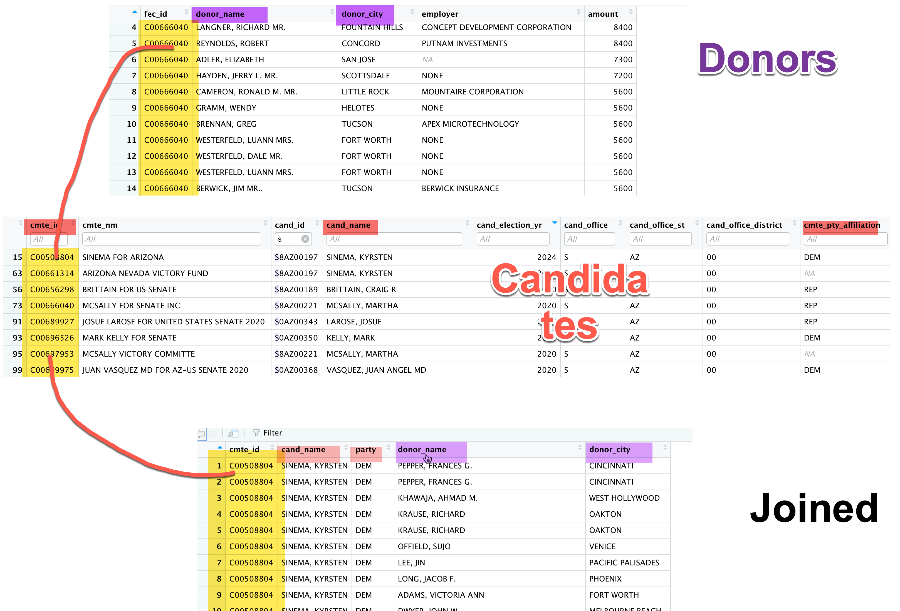

20 Verbs in depth: Matchmaking with joins
In this chapter
- A
joincombines two or more tables (data frames) by column - joining to data frames requires exact matches on one or more columns. Close matches don’t count.
- Use codes in one data frame to “look up” information in another, and attach it to a row, such as the translation of codes to words or demographics of a Census tract.
- Many public records databases come with “lookup tables” or “code sheets”. Make sure to ask for the codes AND their translations in a data request.
- Reporters don’t always stick to matchmaking the way the database designers intended. “Enterprise” joins are those that let you find needles in a haystack, such as bus drivers with a history of DUIs.
- Matching one data frame against an entirely different one will always produce errors. You can minimize the kind of error you fear most – false positives or false negatives – but you likely will have to report out your findings on the ground.
20.1 Join basics
Here is a great explainer on joins made by a previous MAIJ student, Andy Blye. Be sure to watch it:
joins in computer programming means adding columns to a data frame by combining it with another data frame or table. Reporters use it in many ways, some intended by the people who made the data source, and some not.1
Many databases are created expecting you to join tables (data frames) because it’s a more efficient way to store and work with large databases. This is what’s called a “relational database”, and they’re everywhere (or at least everywhere that has updated its computer systems since 1980 or so).
Here’s an example, using campaign finance information. The Federal Elections Commission distributions campaign contribution in related tables, each referring to a different noun. One table lists donations, the other lists candidates and other political action committees. They link together using a common code:

The reason to do this is that you never have to worry that any changes to the candidate information – the treasurer, the address or the office sought – carries over to the donation. It’s only listed once in the candidate table. Most large databases are constructed this way. For example:
- Your school records are held using your student ID, which means that your address and home email only needs to be changed once, not in every class or in every account you have with the school.
- Inspection records, such as those for restaurants, hospitals, housing code violations and workplace safety, typically have at least three tables: The establishment (like a restaurant or a workplace), an inspection (an event on a date), and a violation (something that they found). They’re linked together using establishment ID’s.
- A court database usually has many types of records: A master case record links to information on charges, defendants, lawyers, sentences and court hearings.
Each table, then, is described using a different noun – candidates or contributions; defendants or cases; students or courses. This conforms to the tidy data principle that different types of information are stored in different tables.
20.1.1 join syntax
There are several kinds of joins, but the syntax is similar across them.
old_table_1 %>%
inner_join (new_table , by=c("old table col. name" = "new table col. name") )
20.2 Matchmaking with joins
The type of join described above is often referred to as a “lookup table”. You’ll match codes to their meanings in a way that was intended by the people who made the database. But there are other ways reporters use joins:
“Enterprise” joins
Journalists have taken to calling a specific kind of join “enterprise”, referring to the enterprising reporters who do this. Here, you’ll look for needles in a haystack. Some of the most famous data journalism investigations relied on joining two databases that started from completely different sources, such as:
- Bus drivers who had DUI citations
- Donors to a governor who got contracts from the state
- Day care workers with criminal records
- Small businesses that have defaulted on government backed loans that got a PPP loan anyway.
When you match these kinds of datasets, you will always have some error. You always have to report out any suspected matches, so they are time consuming stories.
In the mid-2000s, when some politicians insisted that dead people were voting and proposed measures to restrict registration, almost every regional news organization sent reporters on futile hunts for the dead voters. They got lists of people on the voter rolls, then lists of people who had died through the Social Security Death Index or local death certificates. I never met anyone who found a single actual dead voter, but months of reporter-hours were spent tracking down each lead.
It’s very common for two people to have the same name in a city. In fact, it’s common to have two people at the same home with the same name – they’ve just left off “Jr.” and “Sr.” in the database. In this case, you’ll find matches that you shouldn’t. These are false positives, or Type I errors in statistics.
Also, we rarely get dates of birth or Social Security Numbers in public records, so we have to join by name and sometimes location. If someone has moved, sometimes uses a nickname, or the government has recorded the spelling incorrectly, the join will fail – you’ll miss some of the possible matches. This is very common with company names, which can change with mergers and other changes in management, and can be listed in many different ways.
These are false negatives, or Type II errors in statistics.2
In different contexts, you’ll want to minimize different kinds of errors. For example, if you are looking for something extremely rare, and you want to examine every possible case – like a child sex offender working in a day care center – you might choose to make a “loose” match and get lots of false positives, which you can check. If you want to limit your reporting only to the most promising leads, you’ll be willing to live with missing some cases in order to be more sure of the joins you find.
You’ll see stories of this kind write around the lack of precision – they’ll often say, “we verified x cases of….” rather than pretend that they know of them all.
Find cases with interesting characteristics
You’ll often want to learn more about a geographic area’s demographics or voting habits or other characteristics, and match it to other data. Sometimes it’s simple: Find the demographics of counties that switched from Trump to Biden as a way to isolate places you might want to visit. Another example from voting might be to find the precinct that has the highest percentage of Latino citizens in the county, then match that precinct against the voter registration rolls to get a list of people you might want to interview on election day. In these instances, the join is used for a filter.
This is also common when you have data by zip code or some other geography, and you want to find clusters of interesting potential stories, such as PPP loans in minority neighborhoods.
Summarize data against another dataset
The previous examples all result in lists of potential story people or places. If you use join on summarized data, you can characterize a broad range of activity across new columns. Simplified, this is how you can write that more PPP money went to predominantly white neighborhoods than those that were majority Black.
20.3 Simple join using PPP industry codes
The PPP data has a code called the naics_code, which is a standardized code to identify industries. They are assigned by the company itself or by the bank, not by the government, but they are a good guide. Here is a data frame that contains the list of industries in the PPP data. It was derived from the concordance package in R, but is fully explained at the Census website.
Here are the two tables: The original PPP data, and the industry code “lookup”.
Here is an example of looking at one sector – the sector code “72” has subsectors and industry codes. Each digit in the code after the 72 refers to a different definition. Those tha end in zero are not as specific as those that have a digit.:
naics_codes %>% filter ( sector_code == "72") %>%
select (-sector_code, -subsector_code)To put this together with the PPP data, you “join” it using the column that it has in common – the naics_code. This is an example of an “inner join”, in which only the rows that match are kept in the result. The result below uses just a few columns from the saved data frame, and then picks out some random rows to view:
loans_with_industry <-
ppp_orig %>%
inner_join ( naics_codes, by=c("naics_code"="naics_code")) (In this case, they have the same column name, but they don’t have to. As long as they CONTAIN the same thing, they can have different names. You can also join using more than one column, such as county and state together.)
Think about what this means: You now have another thing for grouping, so you can see, for instance, how much went to restaurants, or which restaurants on your block got loans.
20.4 Joining risks
20.4.1 joining tl;dr
There are lots of risks in joining tables that you created yourself, or that were created outside a big relational database system. Keep an eye on the number of rows returned every time that you join – you should know what to expect.
20.4.2 Double counting with joins
We won’t go into this in depth, but just be aware it’s easy to double-count rows when you join. Here’s a made-up example, in which a zip code is on the border and is in two counties:
Say you want to use some data on zip codes :
| zip code | county | info |
|---|---|---|
| 85232 | Maricopa | some data |
| 85232 | Pinal | some more data |
and match it to a list of restaurants in a zip code:
| zip code | restaurant name |
|---|---|
| 85232 | My favorite restaurant |
| 85232 | My second-favorite restaurant |
When you match these, you’ll get 4 rows:
| zip code | county | info | restaurant name |
|---|---|---|---|
| 85232 | Maricopa | some data | My favorite restaurant |
| 85232 | Pinal | some more data | My favorite restaurant |
| 85232 | Maricopa | some data | My second-favorite restaurant |
| 85232 | Pinal | some more data | My second-favority restaurant |
Now, every time you try to count restaurants, these two will be double-counted.
In computing, this is called a “many-to-many” relationship – there are many rows of zip codes and many rows of restaurants. In journalism, we call it spaghetti. It’s usually an unintended mess.
20.4.3 Losing rows with joins
The opposite can occur if you aren’t careful and there are items you want to keep that are missing in your reference table. That’s what happened in the immunization data above for the seven schools that I couldn’t find.
20.5 Resources
The “Relational data” chapter in the R for Data Science textbook has details on exactly how a complex data set might fit together.
An example using a superheroes dataset, from Stat 545 at the University of British Columbia
From now on, we’ll start using the term “table” instead of “data frame”, since we can talk about several different ones at the same time.↩︎
I remember them by thinking of the boy who cried wolf. When the village came running and there was no wolf, it was a Type I error, or false positive ; when the village ignored the boy and there was a wolf, it was a Type II error, or false negative.↩︎